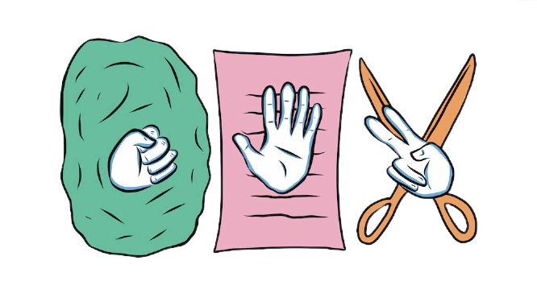
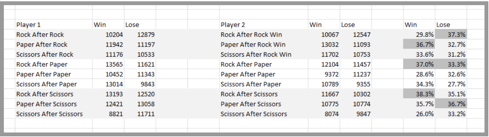
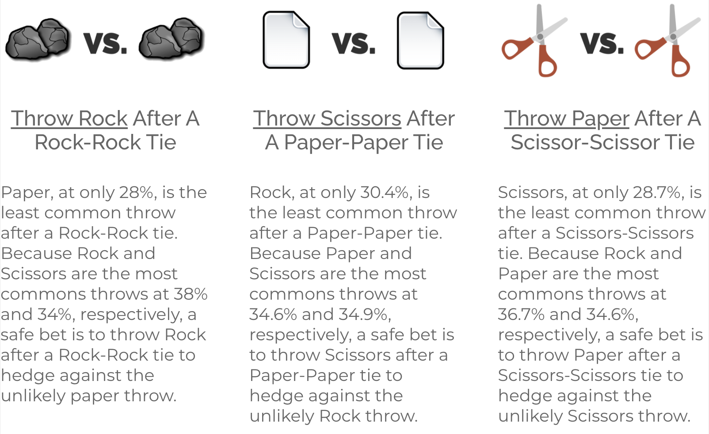

A (Slightly Smarter) Game of Rock Paper Scissors
 The Game

Welcome to a Slightly Smarter game of Rock Paper Scissors! The whole point of this project was to create a python program that could run a semi-intelligent game of Rock Paper Scissors using dictionaries, probabilities, and inputs. This means that, over time, the player using the program will train it to play more intelligently while taking the player's previous inputs into consideration. If someone plays the game with a specific pattern, the program is intended to analyze the given pattern and use it to make future decisions in each of the rounds.
In addition to this, the program has to be able to discern the rules of Rock Paper Scissors, and map out any data or input that is sent by the user. This involves inputs and variables to keep track of scores, the number of each item played (rock, paper, or scissors), the name of the player, and the outcomes of each round and each outcome for the specific item played. Moreover, the program uses a Markov Dictionary that effectively changes the probability of the program's choices given the outcome of the last two rounds. To wrap everything up, the game also has an option to graph the data from the games of Rock Paper Scissors after the third round. This is all with the help from importing the modules from matplotlib's pyplot and random.
The Statistics

Now to talk about statistics— using the website How To Win At Rock Paper Scissors (Using Data From 120,000 Games) by Justin Collier, I used data such as the spreadsheet above and the statistics from the image to the right to create a Markov Dictionary that serves as a starting point for the computer just so that it doesn't select anything with pure randomness. Using these statistics, the dictionary then accounts for 2 different things: the last item played and the outcome— this is used to classify the likeliness of the next item that a person will play, which will determine the program's next semi-random choice for more on the program, see About the Project.